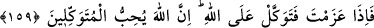
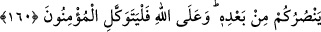

HZ. PEYGAMBERİN MERHAMETİ
159. O vakit Allah’dan bir rahmet ile onlara yumuşak davrandın! Şayet sen kaba,
katı yürekli olsaydın, hiç şüphesiz etrafından dağılıp giderlerdi. Şu halde onları
affet; bağışlanmaları için duâ et; iş hakkında onlara danış. Kararını verdiğin zaman
da artık Allah’a dayanıp güven. Çünkü Allah, kendisine dayanıp güvenenleri sever.
160. Allah size yardım ederse, artık size üstün gelecek hiç kimse yoktur. Eğer
sizi bırakıverirse, ondan sonra size kim yardım eder? Mü’minler ancak Allah’a
güvenip dayanmalıdırlar.
“Allah’ın onlardan esirgemediği büyük rahmeti sebebiyledir ki” bu rahmet, Allah’ın
Hz. Peygamber (s.a.)’i metânetli kılması ve mekârim-i ahlâkı ona has kılmasıdır. Sen
onlara karşı her yönden “yumuşak davrandın”; seni düşmana terketmek ve emirlerine
muhâlefet etmek gibi davranışlarından sonra, yine de onlara rıfk ve lutf ile muamele
ettin.” demektir. Eğer böyle olmasaydın da, beşerî münâsebetlerde fiilî ve kavlî olarak
kaba ve katı yürekli, sert olsaydın, ( ) kelimesi, kötü ahlâklı, ( ) ise
kalbi, hiçbir şeyden etkilenmeyen demektir. İnsan, kötü ahlâklı olmayabilir, kimseye
eziyet etmeyebilir, ancak başkalarına rikkatli ve merhametli de davranmayabilir.
Böylece iki kelime arasındaki fark ortaya çıkmış oluyor.
“Çevrenden dağılır giderlerdi.” Yanında durmazlar, aşağılık işler peşinde
koşarlardı. Öyle ise Allah bunları affettiği gibi, sen de kendi hukûkunu ilgilendiren
konularda onları affet, onlara gösterdiğin şefkati ve yaptığın bu iyiliği tam anlamak için
de Allah’ın hukûkunu ilgilendiren konularda Allah’ın onları bağışlamasını dile!
“İş hakkında onlara danış.” Görüşlerini al. Savaş konusundaki düşüncelerini öğren.
Konunun Uhud savaşı ile ilgili olması, buradaki işten maksadın, savaş olduğunu
gösterir. Yahud da görüşlerini ortaya koyabilmeleri maksadıyla ve gönüllerini hoş
tutabilmek; kadr-u kıymetlerini yüceltmek için, âdeten müşâvere yapılagelen savaş ve
benzeri bütün konularda onlara danış. Bu danışmanın akabinde herhangi bir şeye kalbin
tam olarak mutmain olup karar verince de bu işi en doğru ve sâlih bir şekilde yürürlüğe
koyabilmen husûsunda Allah’a tevekkül et. Çünkü, senin için en doğru olan şeyi ne sen,